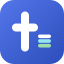

tool
bit
tile + lowercase lockup
glyph on dark chrome
loading state — caret blink
The syntax-palette bars in the cursor = highlighting / piped stages. ≤16px: bars collapse to a solid bit (see favicon-32).